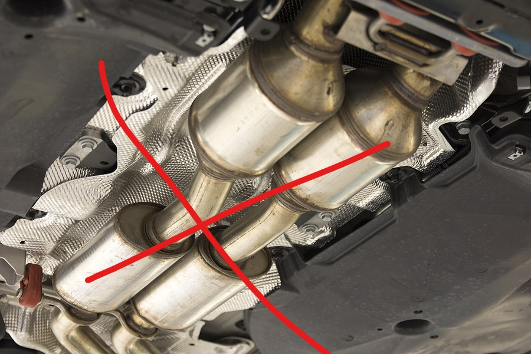

LeRoy Gardner III
Code Platoon Application
← → for slide navigation
Best viewed on computer - not mobile device.
I enjoy tech things
It's great taking bits, bytes, and words into real digital things.
I meant catalytic cracker below...not converter. One is in the refinery and the other is in one's car.
Explaining figuring out "Or" in the coding exercises!
I've studied for two past degrees:
- Thinking out loud: ~ leroygardner.dev ~ LeRoy @ Medium
- I enjoy health and fitness: I coach wrestling, compete in BJJ, and we used to own strength training facility for 5 years called Soul Ruckus Athletics.
- I enjoy reading: technology, history, military, business, and some fiction.
- I am interested in building things with software.
- I prefer music, scotch or coffee, and good company to many other things..
- Uzbekistan
- Germany
- Kyrgyzstan
- Singapore
- S. Korea
- Japan
- Djibouti
- Studied in the Ruby on Rails Program.
- Jesse Wolgamatt is an awesome instructor.
- Active Duty until 2009
- Now in the Reserves
I coached Wrestling while on Active Duty:
- Wait, what?! Yep.
- Now I am a Human Resource Officer aka Staff Guy aka [insert derisive nickname here]...
I like hardware, software and many things between. I've made some RaspberryPi projects and even worked on my Drone.
"My dog, our old barbell club, Germany and Andy Warhol."